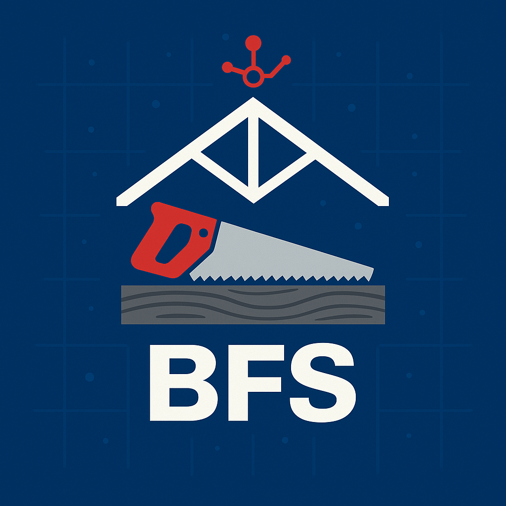
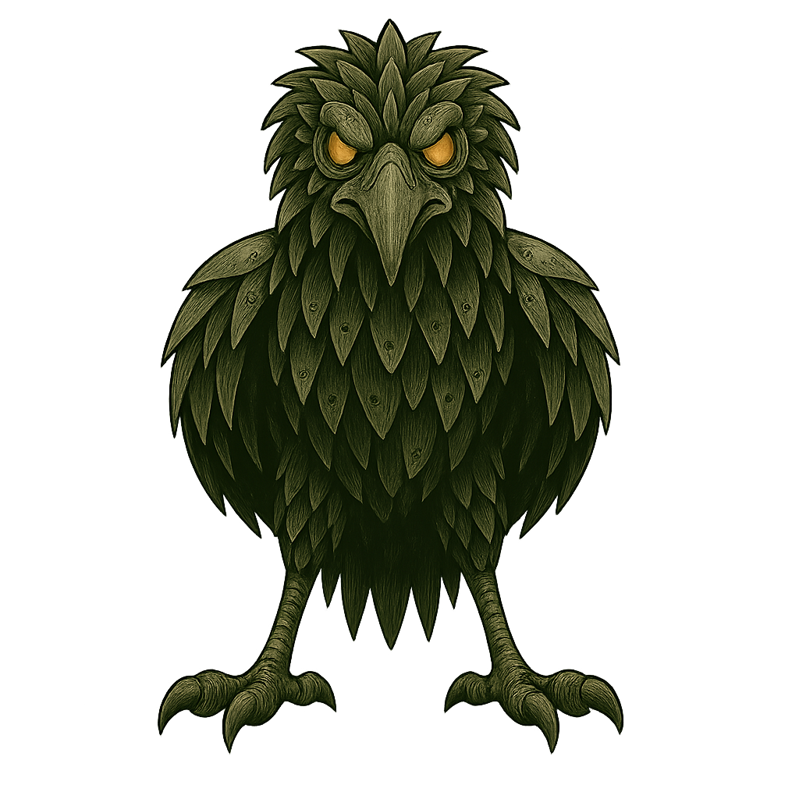

Latest milestone
Example: Protocol Library outline published
Use this slot to call out whatever just shipped — a new protocol set, a documented system, or a major refactor that changes how the forge behaves in practice.

The digital forge
This is where custom GPT systems are architected, tempered and polished for real-world performance — with the same care you’d give to a structural beam or a bridge schematic.
⚠ Active build zone
OverKill Hill is running in forge mode, not museum mode. Some protocols are still clamped to the workbench, documentation is mid‑draft, and a few cables run where permanent conduits will go later. You’re stepping into the shop while the systems are still being tempered — mind the sparks, and feel free to look over the plans.

A quick status plate for the latest completion, addition or milestone in the OverKill Hill P³ stack.
Latest milestone
Use this slot to call out whatever just shipped — a new protocol set, a documented system, or a major refactor that changes how the forge behaves in practice.

The “OverKill” in the name isn’t about complexity for its own sake. It’s about going far enough into the details that you trust the system when everything is moving fast.
We design GPT interactions as protocols, not one-off prompts. Clear steps, defined states and escape hatches for when reality doesn’t match the diagram.
Every system gets road-tested with edge cases, weird inputs and real-world mess. If it breaks, we reforge it — not blame the user.
The goal is not “replace the human.” It’s to build tools that help ambitious people think more clearly, move faster and feel less alone in the complexity.
Some of the systems that live on the Hill. Each one is a blueprint you can walk into: documented, stress-tested and ready to plug into your daily stack.
A retro-bright, emotionally intelligent ecosystem of custom GPTs for career, food, travel, health and identity — built on OverKill Hill architecture.
A mid-century modern AI helpdesk that lives inside the stack — your “phone a friend” for complex questions, tradeoffs and next-step decisions.
A growing library of reusable prompt protocols and scaffolds for real-world workflows — from sales to ops to creative direction.
Whether you’re ready for a single, precise tool or a whole custom stack, OverKill Hill P³ is where we’ll translate what’s in your head into systems that can actually carry the weight.
Start a project conversation